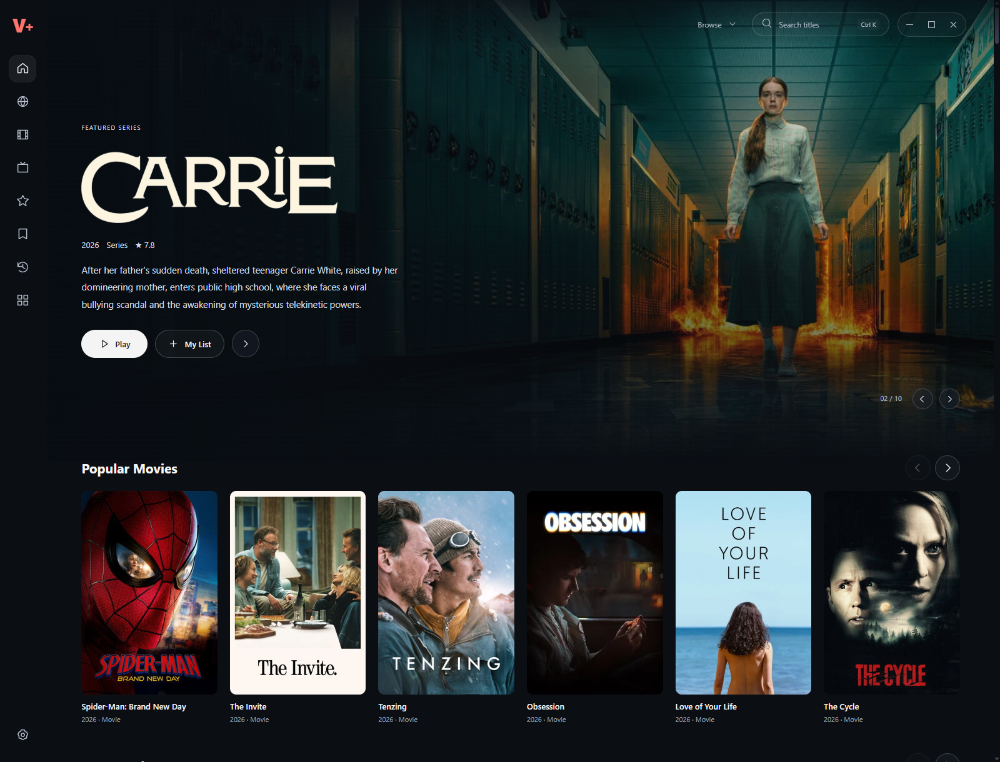
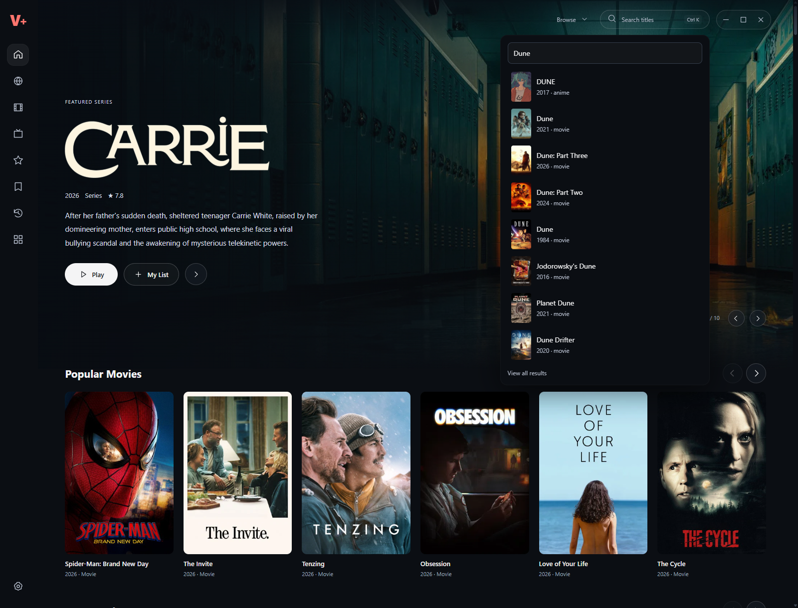
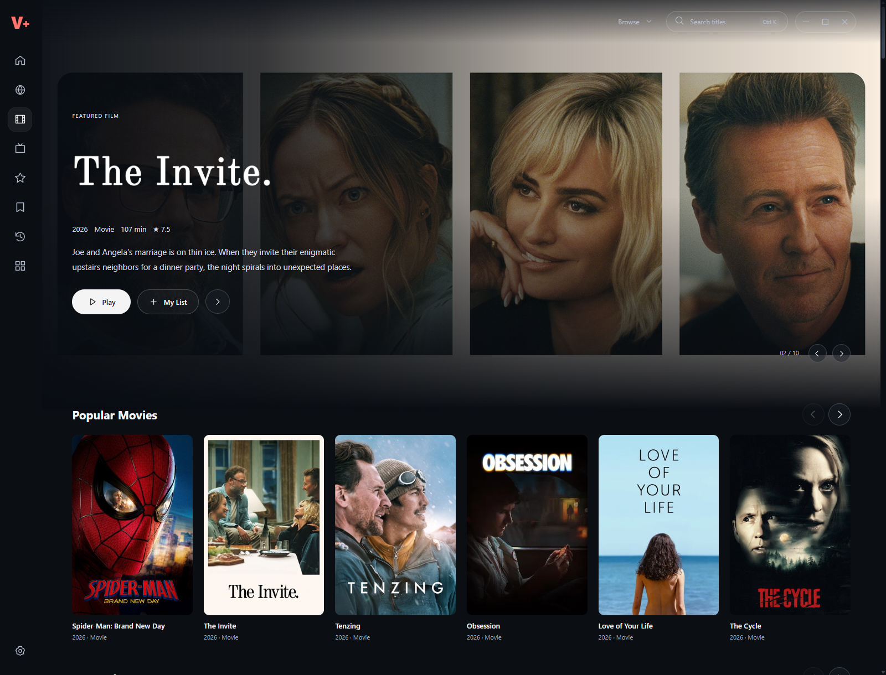
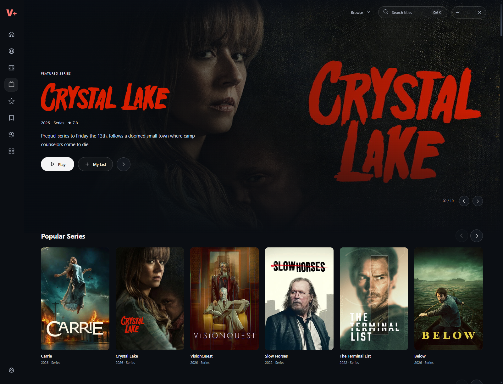
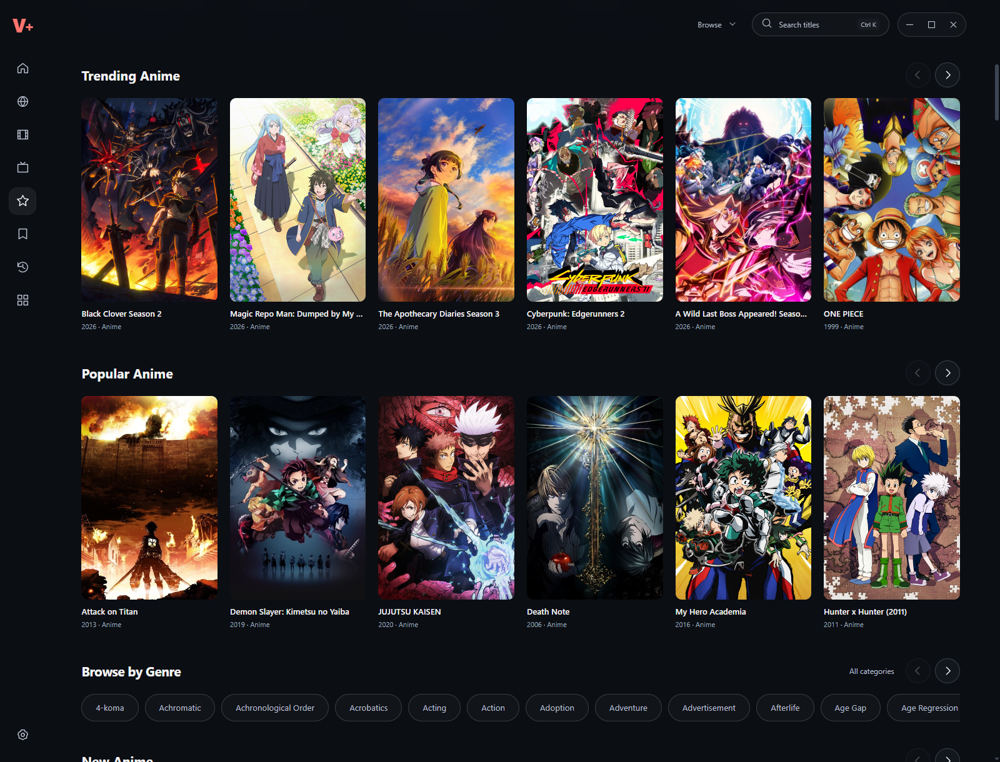
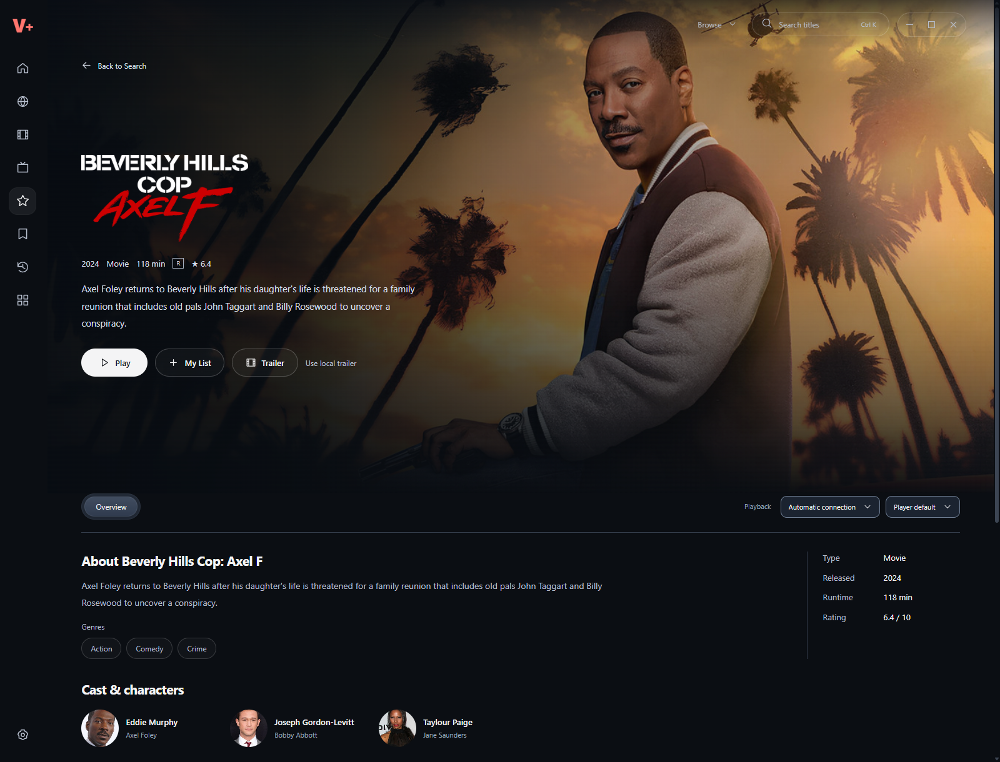
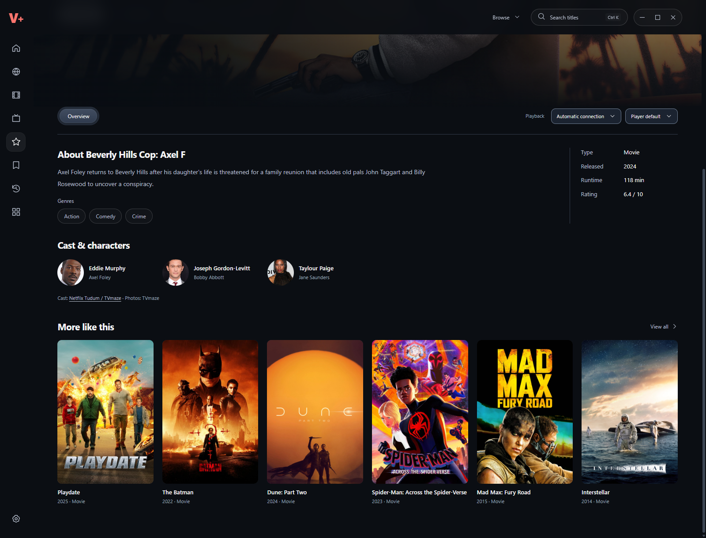
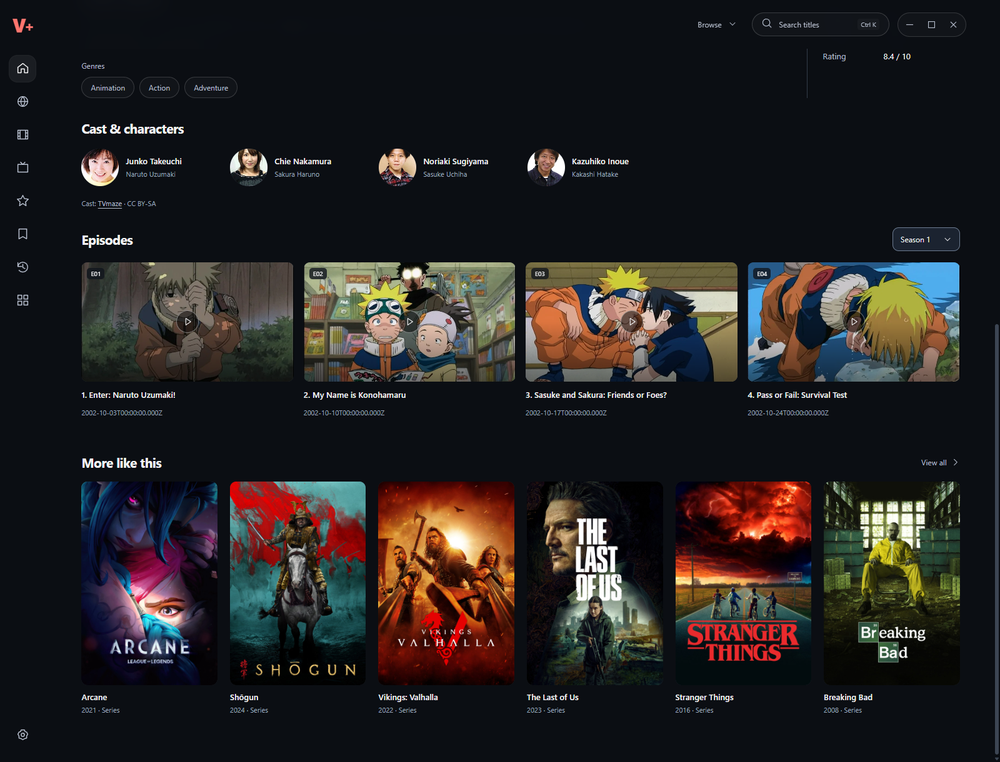
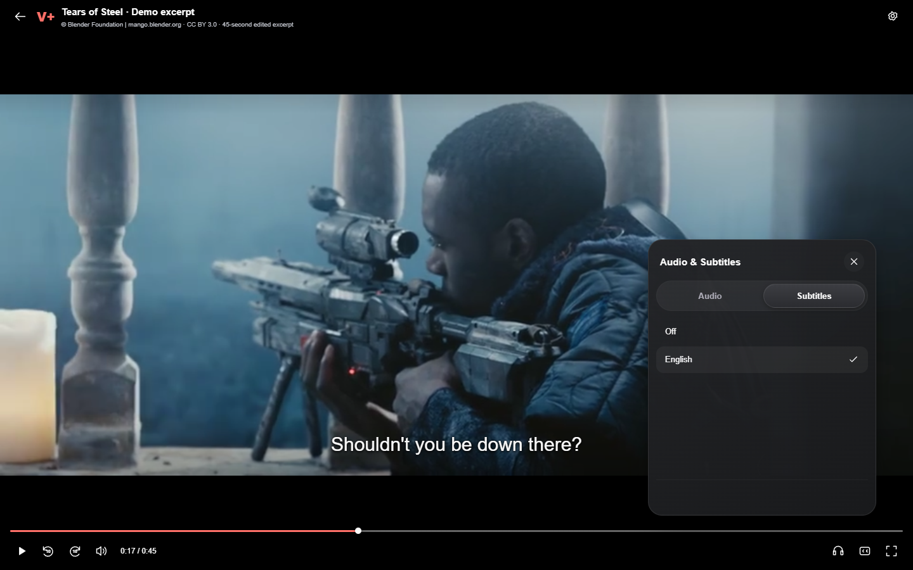
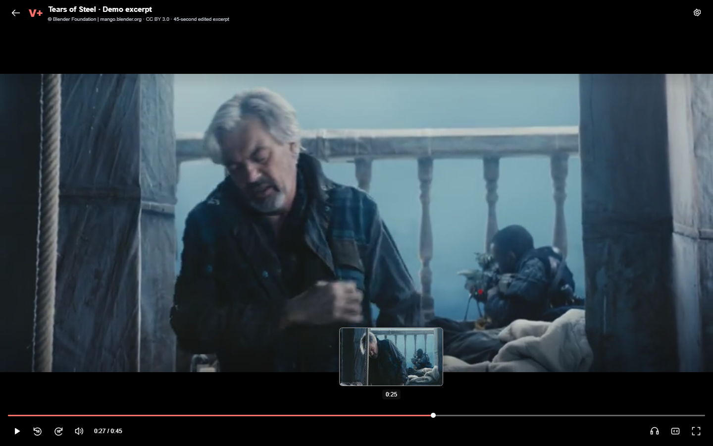

Instant context while seeking
The demo preloads actual frames from each excerpt. Moving along the timeline selects a cached frame instead of starting a decoder for every pointer movement.
A cinematic home for discovery, with a player that feels at home on a laptop.
Product design, interaction design and AI-assisted implementation.
Windows review build 0.6.6 · Curated browser demonstration

Product & interaction design
AI-assisted build and verification
Discovery → details → playback
Continuity across the journey
Electron · JavaScript · CSS
Local state · Shared playback logic
PC first
Mobile and TV development paused
V+ began as a movie, series and anime application. As the interface evolved, the difficult part became the handoff between finding a title and actually watching it.
Feedback during development exposed specific friction: a desktop player inheriting remote-control behaviour, menus closing before the pointer reached them, captions moving when controls opened, and long anime episode lists that were hard to navigate.
Evidence basis: iterative feedback from the project owner and direct application tests. This was an independent project, without a recruited usability study or measured business impact.
Scan cinematic shelves or search from the page you are already on.
Read the title information, save it to My List, or start playback.
Use familiar shortcuts, reachable menus and stable captions.
Keep saved titles and continue from the previous position.
The small header search opens suggestions over the current page. Search begins as you type; selecting a result opens its details. The dedicated Search page keeps the larger input and advanced filters.
Collection headings open their own listings. Small arrow controls replace visible horizontal scrollbars, keeping the artwork prominent while preserving scrolling.

These are uncomposited captures of V+ 0.6.6, using a fresh profile and the application’s real catalogue. Open any image to inspect it at full size.



Large artwork, readable metadata and a short description establish context. Play and My List remain together in the foreground. The layout keeps artwork separate from the controls so media does not rearrange the page.
The desktop app also includes series and anime details, season or entry navigation, episode browsing and an airing schedule where metadata is available. The public demo deliberately uses three open films rather than imitating a live commercial catalogue.

Cast, genre links and related titles give the decision more context. Anime keeps episode information and entry navigation alongside the title, with a full browser for longer lists.
These native screens document the broader product. The public demo stays focused on a dependable discovery-to-playback journey with licensed film excerpts.


PC interaction is separated from the TV remote adapter. Clicking the video toggles playback. Arrow keys seek or adjust volume, and menus open on hover with a short travel allowance so the pointer can reach them.
Audio and subtitles use compact pill tabs inside a neutral floating panel. Captions are anchored to the video frame, independent of menu and control-bar visibility. Controls fade after 1.5 seconds of inactivity during playback, with exceptions for paused video and active interaction.

The demo preloads actual frames from each excerpt. Moving along the timeline selects a cached frame instead of starting a decoder for every pointer movement.
Play position and saved titles live in browser storage for the demo. The native application maintains its own local records. Cross-device sync is not implemented.

The Windows shell, discovery model and desktop player are implemented in JavaScript and CSS, with Electron handling native windows, storage and integrations. Playback controls are separated from source delivery.
The portfolio edition copies the production renderer and compiled desktop player, then replaces the native transport with a small local catalogue adapter. Media, subtitles and preview frames are bundled. It needs no account, API token or external playback service.
Codex assisted implementation and automated checks. I directed the product, visual choices, interaction requirements and review iterations.
These are functional checks, not conversion, engagement or retention metrics. The full Windows 0.6.6 release separately records 141 automated passes and 18 packaged content-preference checks; those release checks have a different scope from this browser demo.
Improving the player meant more than changing its appearance. A menu is only useful if it stays reachable. A selected subtitle is only meaningful if cues actually render. A provider name is only reassuring when the application explains what is available.
External playback remains a separate reliability problem: some sources fail upstream, and one tested provider’s subtitle download returned an error. AnimeEmbed is still a research candidate, with subtitle validation incomplete. The portfolio demo avoids those dependencies and makes its reduced scope explicit.
The next product work is provider reliability and broader real-world testing. Mobile and TV remain paused until the PC experience is ready for those adaptations.
Search for “Tears of Steel”, save a film, play an excerpt,
turn on English subtitles, then return to resume.
Desktop-focused browser demonstration. Three openly licensed films. No live commercial streaming catalogue.
Media credits & demo limitations →